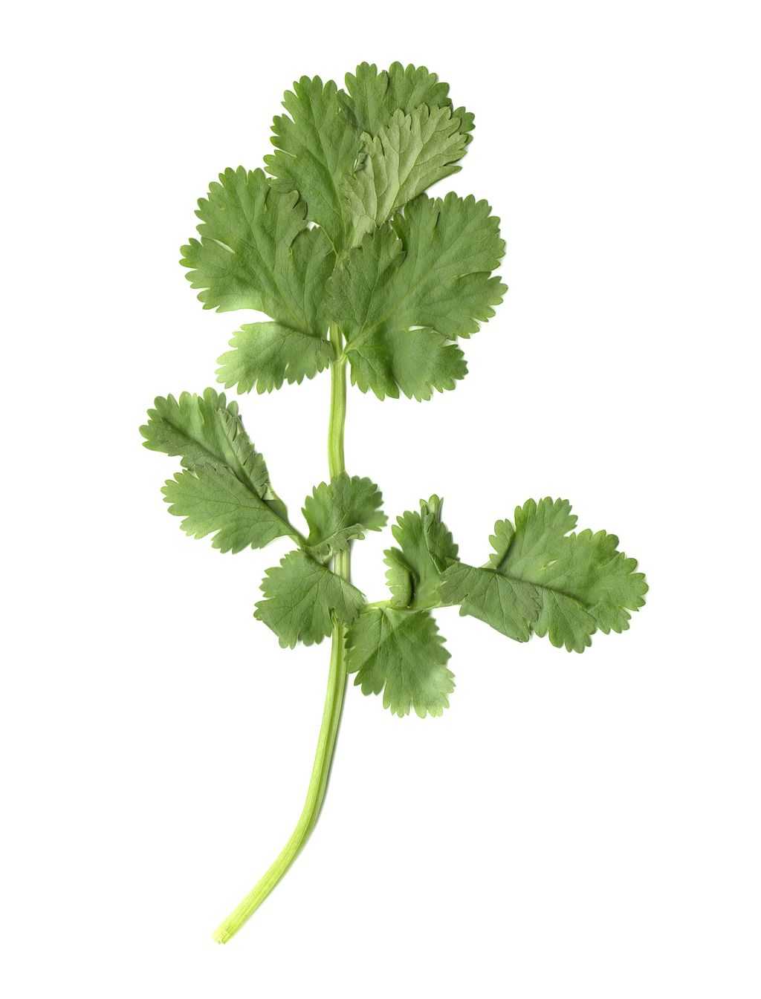

Cilantro
Common Name: Cilantro
Genus Species: Coriandrum sativum
Family: Umbellifers
Origin: Southern Europe
Cultivation: Morocco, Romania and Egypt
Description: The seed of the well-known cilantro or Chinese parsley plant (Coriandrum
sativum) is known as coriander, and it is a spice with one of the longest histories of
use. The name coriander is derived from the Greek word koris, meaning bedbug, since the
unripe seeds and leaves when crushed have a smell suggestive of a crushed bedbug. The
plant is indigenous to Greece, but the seed is now as well known in Asiatic and South
American as it is in Mediterranean cooking. Cilantro is regarded as an herb, and is used
with Mexican salsas, in Greek dishes and, along with the seeds of coriander, in Indian
curries and in Thai food. Coriander is used in condiments, desserts, liqueurs, perfumes
and in candies. Sugar covered coriander was known as comfits; these were used
ceremoniously as a predecessor of paper confetti.
